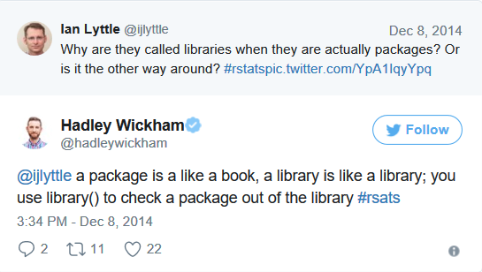
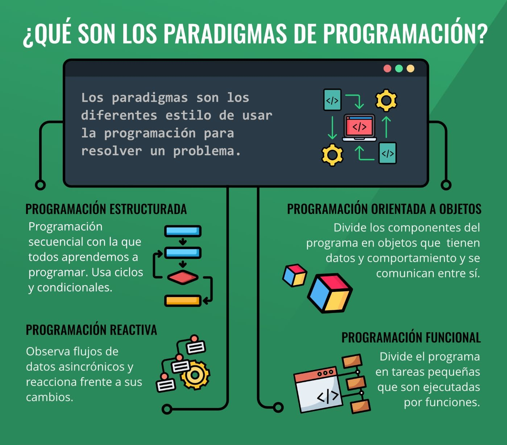

2 Introducción a R
2.1 Instalación de R, RStudio y RTools
2.1.1 R
Distribución e instalación - Para instalar R hay que bajar un fichero ejecutable de la página web del proyecto R: http://www.r-project.org/ - Actualmente (Mayo 2021), la versión más reciente de R para el entorno Windows es la 4.1.0 y el ejecutable de tamaño aproximadamente 86Mb tiene el nombre R-4.1.0-win.exe - Una vez bajado este ejecutable, hay que ejecutarlo y seguir las instrucciones del programa de instalación.

2.1.2 Rstudio
RStudio es un editor para scripts disponible para usuarios de R en todos los sistemas operativos. - Es considerado como un entorno de desarrollo integrado (GUI) que combina un interfaz muy intuitiva con herramientas de código muy potentes que permiten sacar el máximo provecho a R. - La versión en pruebas es gratuita y está disponible en http://www.rstudio.org/ - La ventaja de este editor es que ofrece una serie de opciones no existentes en R, entre otras, por ejemplo, comprobar rápidamente que ningún paréntesis queda sin cerrarse o marcar, copiar y pegar columnas. - Pero además nos da un listado de las variables y nos da una descripción de los bancos de datos que hemos introducido. También tiene una lista de los paquetes instalados y los gráficos realizados.

2.1.3 RTools
Herramientas para construir paquetes de R. Esto es lo que desea para construir sus propios paquetes en Windows, o para construir R por sí mismo.
A partir de R 4.0.0 (lanzado en abril de 2020), R para Windows usa un paquete de cadena de herramientas llamado rtools40.
Esta versión de Rtools incluye gcc 8.3.0 e introduce un nuevo sistema de compilación basado en msys2`, que facilita la compilación y el mantenimiento de R, así como las bibliotecas del sistema que necesitan los paquetes de R en Windows. Las compilaciones recientes de rtools40 también contienen una cadena de herramientas adicional gcc-10 ucrt para probar paquetes de R y bibliotecas del sistema con las compilaciones ucrt experimentales de R-devel. Para obtener más información sobre estos temas, siga los enlaces al final de este documento.
Jeroen Ooms mantiene la versión actual de Rtools. El profesor Brian Ripley y Duncan Murdoch prepararon ediciones anteriores. El mejor lugar para informar errores es a través de la organización r-windows en GitHub.
2.2 ¿Qué es R?
- Proporciona un amplio abanico de herramientas estadísticas (modelos lineales y no lineales, tests estadísticos, análisis de series temporales, algoritmos de clasificación y agrupamiento, etc.).
- Permite definir funciones propias. De hecho, gran parte de las funciones de R están escritas en el mismo R, aunque para algoritmos computacionalmente exigentes es posible desarrollar bibliotecas en C, C++ o Fortran que se cargan dinámicamente.
- R hereda de S su orientación a objetos.
- R puede integrarse con distintas bases de datos y existen bibliotecas que facilitan su utilización desde lenguajes de programación interpretados como Python (PythonInR) ❤️.
- Otra de las características de R es su capacidad gráfica, que permite generar gráficos con alta calidad (ggplot). R posee su propio formato para la documentación basado en LaTeX.
2.3 ¿Qué es RStudio?
- RStudio es un editor para scripts disponible para usuarios de R en todos los sistemas operativos.
- Es considerado como un entorno de desarrollo integrado (GUI) 🕧 que combina un interfaz muy intuitiva con herramientas de código muy potentes que permiten sacar el máximo provecho a R.
- La versión en pruebas es gratuita y está disponible en http://www.rstudio.org/.
- La ventaja de este editor es que ofrece una serie de opciones no existentes en R, entre otras, por ejemplo, comprobar rápidamente que ningún paréntesis queda sin cerrarse o marcar, copiar y pegar columnas.
- Pero además nos da un listado de las variables y nos da una descripción de los bancos de datos que hemos introducido. También tiene una lista de los paquetes instalados y los gráficos realizados.
2.4 ¿Qué otros IDE’s existen para R?
- Tinn-R
- RKward
- Rcommander
- Jupyter notebook
- Visual studio code
- Pycharm
- Eclipse
2.5 Diferencias entre paquetes y librerías
En el caso de la función library(), en muchas ocasiones existe la confusión entre un paquete y una librería, y podemos encontrarnos con gente llamando “librerías” a los paquetes.
Una cosa es la función library() usada para cargar un paquete, y que se refiere al lugar en dónde el paquete es localizado, habitualmente una carpeta en nuestro ordenador, y otra un paquete que es una colección de funciones y datos empaquetados de forma conveniente.
Dicho de otra manera, y en palabras de Hadley Wickham, científico de datos en RStudio, y creador de la gran mayoría de paquetes del ecosistema tidyverse:

De igual manera, para recordar la diferencia es ejecutar la función library() sin argumentos. Esto nos proporcionará una lista de paquetes instalados en diferentes librerías en nuestro ordenador.
# Install packages
install.packages("tidyverse")
# Load packages
library(tidyverse)
# You can also use "pacman" package to install
# an loading other packages
if (!require("pacman")) {
install.packages("pacman")
}
pacman::p_load(
tidyverse, formatR, knitr, rmdformats, pander, labelled, readxl, magrittr, kableExtra,
Lahman, datos
)2.6 Tipos de lenguajes de programación
2.6.1 Lenguaje compilado
Son aquellos lenguajes de alto nivel que como su nombre lo sugiere, requieren de un compilador (programa que traduce un lenguaje de alto nivel en código máquina o lenguaje máquina) para traducirlo y crear la parte ejecutable.
- C++
- Go
2.6.2 Lenguaje interpretado
Son aquellos lenguajes de programación también de alto nivel en donde el código fuente debe ser traducido a un lenguaje que la máquina entienda y pueda realizar, no crean un archivo externo.
- Ruby
- Javascript
- Python
- R
Los lenguajes de alto nivel permiten escribir instrucciones en un idioma muy parecido al inglés así como hacer uso de notaciones matemáticas comunes.
2.6.3 Lenguaje intermedio
Los lenguajes intermedios son compilados hacia programas intermedios y luego interpretados, esto permite que pueda ser ejecutado desde cualquier sistema operativo sin necesidad de crear ejecutables.
- Java
- C#

2.7 Paradigmas de programación
Un paradigma de programación es una manera o estilo de programación de software. Se trata de un conjunto de métodos sistemáticos aplicables en todos los niveles del diseño de programas para resolver problemas computacionales.
2.7.1 Programación Orientado a Objetos
Se construyen modelos de objetos que representan elementos (objetos) del problema a resolver, que tienen características y funciones. Permite separar los diferentes componentes de un programa, simplificando así su creación, depuración y posteriores mejoras. La programación orientada a objetos disminuye los errores y promociona la reutilización del código. Es una manera especial de programar, que se acerca de alguna manera a cómo expresaríamos las cosas en la vida real.
2.7.2 Programación Funcional
La programación funcional es un paradigma declarativo. Nos enfocaremos en “qué” estamos haciendo y no en “cómo” se está haciendo que sería el enfoque imperativo. Esto quiere decir que se expresa nuestra lógica sin describir controles de flujo, ni ciclos ni condicionales.

2.8 Ambiente de trabajo en RStudio

2.9 Mi primer “Hello world”
print("Hello world")## [1] "Hello world"2.10 Tipos de datos en R
R es capaz de manejar una variedad de tipos de datos, que se almacenan en diferentes estructuras como se puede observar en la siguiente tabla:
| Tipos de Datos | Información | Definición |
|---|---|---|
Numeric |
Datos contenidos en el conjuntos de los números reales | num <- 3.14 |
Integer |
Datos contenidos en el conjuntos de los números enteros | int <- 3L |
Character |
Datos que soportan cadenas de caracteres | chr <- "hello world" |
Complex |
Datos que soportan números complejos | comp <- 3+2i |
Logical |
Datos que sólo soportan valores lógicos de verdadero (T) o falso (F) | a <- 1; b <- 2; a < b |
Factor |
Este no es estrictamente un tipo de dato, pero vale la pena describirlo aquí. Una variable factor es una variable categórica. Los vectores de caracteres a menudo se almacenan como factores para explotar funciones para tratar datos categóricos. Por ejemplo, en análisis de regresión | Aplique as.factor() a un vector de caracteres o numéricos |
2.11 Tipos de estructuras de datos
| Objetos | Tipos | ¿Soporta varios tipos de datos en el mismo objeto? |
|---|---|---|
Vector |
Numérico, carácter, complejo o lógico | No |
Factor |
Numérico o lógico | No |
Arreglo |
Numérico, carácter, complejo o lógico | No |
Matriz |
Numérico, carácter, complejo o lógico | No |
Data frame |
Numérico, carácter, complejo o lógico | Sí |
ts |
Numérico, carácter, complejo o lógico | Sí |
Lista |
Numérico, carácter, complejo, lógico, función, expresión, … | Sí |
2.11.1 Asignación de objetos
obj <- c(5, 2, 6, 58, 456, 56, 5)
obj## [1] 5 2 6 58 456 56 5c(5, 2, 6, 58, 456, 56, 5) -> obj
obj## [1] 5 2 6 58 456 56 52.11.2 Vector
- Es el lemento más básico en R.
- Contiene elementos de la misma clase (son atómicos).
- Se crea con la función c(), que significa ‘concatenar’ o ‘combinar.’
vector01 <- c(1, 2, 4, 7, 10, 11, 12, 19, 26)
vector01## [1] 1 2 4 7 10 11 12 19 26vector02 <- c("a", "b", "d", "g", "j", "k", "l", "s", "z")
vector02## [1] "a" "b" "d" "g" "j" "k" "l" "s" "z"vector03 <- c("jorge", "roy", "daniel", "cesar", "patin", 254, 265)
vector03## [1] "jorge" "roy" "daniel" "cesar" "patin" "254" "265"vector04 <- c(FALSE, FALSE, FALSE, TRUE, TRUE, TRUE, TRUE)
vector04## [1] FALSE FALSE FALSE TRUE TRUE TRUE TRUE2.11.2.1 Algunas operaciones con vectores
# indexar vectores
vector01## [1] 1 2 4 7 10 11 12 19 26vector01[4]## [1] 7# evaluar la naturaleza del vector
a <- vector01[4]
is.vector(a)## [1] TRUEis.numeric(a)## [1] TRUEis.integer(a)## [1] FALSE# operaciones con vectores
length(vector01)## [1] 9(vector01 * 2) + 500## [1] 502 504 508 514 520 522 524 538 552sum(vector01)## [1] 92sqrt(vector01 - 1)## [1] 0.000000 1.000000 1.732051 2.449490 3.000000 3.162278 3.316625 4.242641
## [9] 5.000000vector01 + (vector01 * 2)## [1] 3 6 12 21 30 33 36 57 782.11.2.2 Secuencias numéricas
# x:y puede leerse como “secuencia de x a(:) y”
1:20## [1] 1 2 3 4 5 6 7 8 9 10 11 12 13 14 15 16 17 18 19 20pi:10## [1] 3.141593 4.141593 5.141593 6.141593 7.141593 8.141593 9.14159315:1## [1] 15 14 13 12 11 10 9 8 7 6 5 4 3 2 1# seq(x,y,by,length) puede leerse como “secuencia de x a(:) y” con
# "by" incrementos o "length" de elementos
seq(0, 21)## [1] 0 1 2 3 4 5 6 7 8 9 10 11 12 13 14 15 16 17 18 19 20 21seq(0, 21, by = 3)## [1] 0 3 6 9 12 15 18 21seq(0, 21, length = 20)## [1] 0.000000 1.105263 2.210526 3.315789 4.421053 5.526316 6.631579
## [8] 7.736842 8.842105 9.947368 11.052632 12.157895 13.263158 14.368421
## [15] 15.473684 16.578947 17.684211 18.789474 19.894737 21.0000002.11.3 Factor
En R, los factores se usan para trabajar con variables categóricas, es decir, variables que tienen un conjunto fijo y conocido de valores posibles. También son útiles cuando quieres mostrar vectores de caracteres en un orden no alfabético.
Históricamente, los factores eran más sencillos de trabajar que los caracteres. Como resultado, muchas de las funciones de R base automáticamente convierten los caracteres a factores. Esto significa que, a menudo, los factores aparecen en lugares donde no son realmente útiles. Afortunadamente, no tienes que preocuparte de eso en el tidyverse y puedes concentrarte en situaciones en las que los factores son genuinamente útiles.
Si quieres aprender más sobre factores, te recomendamos leer el artículo de Amelia McNamara y Nicholas Horton, Wrangling categorical data in R (el nombre significa Domando/Manejando Datos Categóricos en R). Este artículo cuenta parte de la historia discutida en stringsAsFactors: An unauthorized biography (del inglés cadenasComoFactores: Una Biografía No Autorizada) y stringsAsFactors =
Imagina que tienes una variable que registra meses:
vect01 <- c("Dec", "Apr", "Jan", "Mar", "Jan", "Mar")Usar una cadena de caracteres (o string, en inglés) para guardar esta variable tiene dos problemas:
- Solo hay doce meses posibles y no hay nada que te resguarde de errores de tipeo:
vect02 <- c("Dec", "Apr", "Jam", "Mar", "Jan", "Mar")- No se ordena de una forma útil:
sort(vect02)## [1] "Apr" "Dec" "Jam" "Jan" "Mar" "Mar"Puedes solucionar ambos problemas con un factor. Para crearlo, debes empezar definiendo una lista con los niveles válidos:
month_levels <- month.abbAhora puedes crear un factor:
factor01 <- factor(vect01, levels = month_levels)
factor01## [1] Dec Apr Jan Mar Jan Mar
## Levels: Jan Feb Mar Apr May Jun Jul Aug Sep Oct Nov Decsort(factor01)## [1] Jan Jan Mar Mar Apr Dec
## Levels: Jan Feb Mar Apr May Jun Jul Aug Sep Oct Nov DecCualquier valor no fijado en el conjunto será convertido a NA de forma silenciosa:
factor02 <- factor(vect02, levels = month_levels)
factor02## [1] Dec Apr <NA> Mar Jan Mar
## Levels: Jan Feb Mar Apr May Jun Jul Aug Sep Oct Nov DecSi quieres una advertencia, puedes usar readr::parse_factor() (segmentar un factor, en inglés):
readr::parse_factor(vect02, levels = month_levels)## Warning: 1 parsing failure.
## row col expected actual
## 3 -- value in level set Jam## [1] Dec Apr <NA> Mar Jan Mar
## attr(,"problems")
## # A tibble: 1 x 4
## row col expected actual
## <int> <int> <chr> <chr>
## 1 3 NA value in level set Jam
## Levels: Jan Feb Mar Apr May Jun Jul Aug Sep Oct Nov DecSi omites los niveles, se van a definir a partir de los datos en orden alfabético:
factor(vect01)## [1] Dec Apr Jan Mar Jan Mar
## Levels: Apr Dec Jan MarA veces es preferible que el orden de los niveles se corresponda con su primera aparición en los datos. Puedes hacer esto cuando creas el factor, al definir los niveles con unique(x) o después con fct_inorder().
factor(vect01, levels = unique(vect01))## [1] Dec Apr Jan Mar Jan Mar
## Levels: Dec Apr Jan Marforcats::fct_inorder(factor(vect01))## [1] Dec Apr Jan Mar Jan Mar
## Levels: Dec Apr Jan Mar2.11.4 Matrix
Una matriz es una estructura bidimensional. Las filas son horizontales y las columnas son verticales. Una matriz de 4 por 3 (4 x 3), por ejemplo, tiene 4 filas y 3 columnas. Las matrices se crean comúnmente usando tablas de datos numéricos como las de una hoja de cálculo de Excel o un archivo csv.
vector01## [1] 1 2 4 7 10 11 12 19 26dim(vector01)## NULLDado que la variable es un vector, no tiene un atributo dim (entonces es simplemente NULL).
¿Qué ocurre si le damos a vector01 un atributo dim?
dim(vector01) <- c(3, 3)
vector01## [,1] [,2] [,3]
## [1,] 1 7 12
## [2,] 2 10 19
## [3,] 4 11 26class(vector01)## [1] "matrix" "array"El ejemplo que utilizamos hasta ahora tenía la intención de ilustrar la idea de que una matriz es simplemente un vector con un atributo de dimensión.
Un método más directo para crear la misma matriz utiliza la función matrix.
matrix01 <- matrix(vector01, nrow = 3, ncol = 3, byrow = T)
matrix01## [,1] [,2] [,3]
## [1,] 1 2 4
## [2,] 7 10 11
## [3,] 12 19 26arboles <- c("Tipuana tipu", "Myrsine andina", "Salix humboldtiana")
matrix02 <- cbind(arboles, matrix01) # column bind o juntar por columna.
matrix02## arboles
## [1,] "Tipuana tipu" "1" "2" "4"
## [2,] "Myrsine andina" "7" "10" "11"
## [3,] "Salix humboldtiana" "12" "19" "26"Esto se llama coerción implícita porque no lo hemos pedido. Solo sucedió. Sin embargo, todavía se desea trabajar con diferentes tipos de datos.
class(matrix02)## [1] "matrix" "array"dim(matrix02)## [1] 3 4rownames(matrix02)## NULLcolnames(matrix02)## [1] "arboles" "" "" ""2.11.5 Data Frame
Un data frame es una estructura de datos bidimensional similar a una matriz, pero funciona de manera muy diferente. Si bien un data frame parece una tabla simple, de hecho es una lista de vectores de la misma longitud. Para los nuevos usuarios de R, las matrices y los data frames parecen similares. La principal diferencia es que un data frame permite tipos de datos mixtos (por ejemplo, numérico, lógico, caracter). Esto les permite almacenar diferentes tipos de variables, lo cual es muy útil en el análisis estadístico. Por ejemplo, en un análisis de regresión. Las matrices se usan principalmente para almacenar datos numéricos, y se pueden usar para álgebra matricial.
Matrices y Data Frames, ambos representan tipos de datos rectangulares, lo que significa que se usan para almacenar datos tabulares, con filas y columnas.
La principal diferencia, es que las matrices solo pueden contener una única clase de datos (al igual que los vectores), mientras que los dataframes pueden consistir de muchas clases diferentes de datos.
# se crea un data frame (df)
df01 <- data.frame(arboles, matrix01)
df01## arboles X1 X2 X3
## 1 Tipuana tipu 1 2 4
## 2 Myrsine andina 7 10 11
## 3 Salix humboldtiana 12 19 26class(df01)## [1] "data.frame"# podemos cambiar el nombre a las variables (columnas)
colnames(df01) <- c("nombre_cientifico", "circunferencia", "diametro_copa", "altura" )
df01## nombre_cientifico circunferencia diametro_copa altura
## 1 Tipuana tipu 1 2 4
## 2 Myrsine andina 7 10 11
## 3 Salix humboldtiana 12 19 262.11.5.1 Conjunto de datos en R
Varios conjuntos de datos tabulados o datasets se icluyen en la instalación de R (en el paquete datasets) y por defecto se ecuentran cargados para su uso. la funcion data() lista todos los datasets de R.
Trabajemos con el dataset iris (Edgar Anderson’s Iris Data)
str(iris)## 'data.frame': 150 obs. of 5 variables:
## $ Sepal.Length: num 5.1 4.9 4.7 4.6 5 5.4 4.6 5 4.4 4.9 ...
## $ Sepal.Width : num 3.5 3 3.2 3.1 3.6 3.9 3.4 3.4 2.9 3.1 ...
## $ Petal.Length: num 1.4 1.4 1.3 1.5 1.4 1.7 1.4 1.5 1.4 1.5 ...
## $ Petal.Width : num 0.2 0.2 0.2 0.2 0.2 0.4 0.3 0.2 0.2 0.1 ...
## $ Species : Factor w/ 3 levels "setosa","versicolor",..: 1 1 1 1 1 1 1 1 1 1 ...# todas las observaciones de la columna 'Species'
iris[, "Species"]## [1] setosa setosa setosa setosa setosa setosa
## [7] setosa setosa setosa setosa setosa setosa
## [13] setosa setosa setosa setosa setosa setosa
## [19] setosa setosa setosa setosa setosa setosa
## [25] setosa setosa setosa setosa setosa setosa
## [31] setosa setosa setosa setosa setosa setosa
## [37] setosa setosa setosa setosa setosa setosa
## [43] setosa setosa setosa setosa setosa setosa
## [49] setosa setosa versicolor versicolor versicolor versicolor
## [55] versicolor versicolor versicolor versicolor versicolor versicolor
## [61] versicolor versicolor versicolor versicolor versicolor versicolor
## [67] versicolor versicolor versicolor versicolor versicolor versicolor
## [73] versicolor versicolor versicolor versicolor versicolor versicolor
## [79] versicolor versicolor versicolor versicolor versicolor versicolor
## [85] versicolor versicolor versicolor versicolor versicolor versicolor
## [91] versicolor versicolor versicolor versicolor versicolor versicolor
## [97] versicolor versicolor versicolor versicolor virginica virginica
## [103] virginica virginica virginica virginica virginica virginica
## [109] virginica virginica virginica virginica virginica virginica
## [115] virginica virginica virginica virginica virginica virginica
## [121] virginica virginica virginica virginica virginica virginica
## [127] virginica virginica virginica virginica virginica virginica
## [133] virginica virginica virginica virginica virginica virginica
## [139] virginica virginica virginica virginica virginica virginica
## [145] virginica virginica virginica virginica virginica virginica
## Levels: setosa versicolor virginica# Se utiliza el caracter ‘$’ para acceder a los campos o columnas.
iris$Species## [1] setosa setosa setosa setosa setosa setosa
## [7] setosa setosa setosa setosa setosa setosa
## [13] setosa setosa setosa setosa setosa setosa
## [19] setosa setosa setosa setosa setosa setosa
## [25] setosa setosa setosa setosa setosa setosa
## [31] setosa setosa setosa setosa setosa setosa
## [37] setosa setosa setosa setosa setosa setosa
## [43] setosa setosa setosa setosa setosa setosa
## [49] setosa setosa versicolor versicolor versicolor versicolor
## [55] versicolor versicolor versicolor versicolor versicolor versicolor
## [61] versicolor versicolor versicolor versicolor versicolor versicolor
## [67] versicolor versicolor versicolor versicolor versicolor versicolor
## [73] versicolor versicolor versicolor versicolor versicolor versicolor
## [79] versicolor versicolor versicolor versicolor versicolor versicolor
## [85] versicolor versicolor versicolor versicolor versicolor versicolor
## [91] versicolor versicolor versicolor versicolor versicolor versicolor
## [97] versicolor versicolor versicolor versicolor virginica virginica
## [103] virginica virginica virginica virginica virginica virginica
## [109] virginica virginica virginica virginica virginica virginica
## [115] virginica virginica virginica virginica virginica virginica
## [121] virginica virginica virginica virginica virginica virginica
## [127] virginica virginica virginica virginica virginica virginica
## [133] virginica virginica virginica virginica virginica virginica
## [139] virginica virginica virginica virginica virginica virginica
## [145] virginica virginica virginica virginica virginica virginica
## Levels: setosa versicolor virginicaCuando queremos extraer datos del data frame según una condicion, esto se complica.
head(iris[iris$Species == "setosa", ])## Sepal.Length Sepal.Width Petal.Length Petal.Width Species
## 1 5.1 3.5 1.4 0.2 setosa
## 2 4.9 3.0 1.4 0.2 setosa
## 3 4.7 3.2 1.3 0.2 setosa
## 4 4.6 3.1 1.5 0.2 setosa
## 5 5.0 3.6 1.4 0.2 setosa
## 6 5.4 3.9 1.7 0.4 setosaAsí mismo, si se desea obtener las observaciones donde el ancho del sépalo sea menor o igual a 3 y la especie sea “setosa.”
head(iris[iris[, "Sepal.Width"] <= 3 & iris[, "Species"] == "setosa", ])## Sepal.Length Sepal.Width Petal.Length Petal.Width Species
## 2 4.9 3.0 1.4 0.2 setosa
## 9 4.4 2.9 1.4 0.2 setosa
## 13 4.8 3.0 1.4 0.1 setosa
## 14 4.3 3.0 1.1 0.1 setosa
## 26 5.0 3.0 1.6 0.2 setosa
## 39 4.4 3.0 1.3 0.2 setosa2.11.5.2 Subsetting
La función subset nos facilita filtrar datos cuando queremos que se cumplan ciertas condiciones.
subset(iris, Sepal.Width <= 3 & Species == "setosa")## Sepal.Length Sepal.Width Petal.Length Petal.Width Species
## 2 4.9 3.0 1.4 0.2 setosa
## 9 4.4 2.9 1.4 0.2 setosa
## 13 4.8 3.0 1.4 0.1 setosa
## 14 4.3 3.0 1.1 0.1 setosa
## 26 5.0 3.0 1.6 0.2 setosa
## 39 4.4 3.0 1.3 0.2 setosa
## 42 4.5 2.3 1.3 0.3 setosa
## 46 4.8 3.0 1.4 0.3 setosa¿Pero es la mejor opción?
¿Cómo ordeno? ¿Cómo cambio de un formato “ancho” a un formato “largo” (o viceversa)? etc.
La tendencia en la comunidad R para el tratamiento de datos, comprende el uso de tidyverse.
2.11.6 Listas
A diferencia de un vector, una lista es una colección de elementos que pueden ser de diferente tipo. Los componentes de una lista son típicamente pares clave-valor (key-value). El siguiente ejemplo muestra cómo se puede almacenar un punto (con coordenas) en una lista.
# Los elementos de la lista generalmente se acceden por nombre
coordenadas <- list(x = 10, y = 15)
coordenadas## $x
## [1] 10
##
## $y
## [1] 15point <- list(id = 123, coord = coordenadas, spatial.reference = "WGS_84")
point## $id
## [1] 123
##
## $coord
## $coord$x
## [1] 10
##
## $coord$y
## [1] 15
##
##
## $spatial.reference
## [1] "WGS_84"point$id## [1] 123# También podemos acceder a sus elementos de la siguiente manera
point[1]## $id
## [1] 123class(point[1])## [1] "list"# Para obtener el valor del elemento de la lista, use corchetes dobles
point[[1]]## [1] 123class(point[[1]])## [1] "numeric"
La lista, en el ejemplo, tiene tres elementos de diferentes tipos de datos. id es numérico, coord es otra lista y spatial.reference es una cadena de caracteres. La lista coord contiene dos elementos numéricos, x e y. Generalmente, se accede a los elementos de la lista usando su nombre, en lugar de número. En particular, muchas estructuras de datos tienen elementos con nombre a los que se puede acceder utilizando los operadores $ o @.
2.12 Lectura / escritura de datos (.csv, .xlsx, .RData, .rds)
En la pestaña en Entorno (Environment) de RStudio podemos importar conjuntos de datos o datasets con el asistente de importación. No es recomendable cuando debemos importar varios archivos o si se van a leer archivos grandes. Para lo cual es más eficiente usar código.

2.12.1 CSV
Si conocemos la estructura de nuestros datos (por ejemplo, la primera fila es el título de las columnas o es un archivo separado por comas), Se pueden utilizar las funciones read.csv (librería base) o read_csv (librería readr, de tidyverse):
# datos será un 'data frame'
data01 <- read.csv(file = 'data/file.csv')
head(data01)## Sepal.Length Sepal.Width Petal.Length Petal.Width Species
## 1 5.1 3.5 1.4 0.2 setosa
## 2 4.9 3.0 1.4 0.2 setosa
## 3 4.7 3.2 1.3 0.2 setosa
## 4 4.6 3.1 1.5 0.2 setosa
## 5 5.0 3.6 1.4 0.2 setosa
## 6 5.4 3.9 1.7 0.4 setosa# datos será un 'tibble'
data01 <- readr::read_csv(file = 'data/file.csv')## Rows: 150 Columns: 5## -- Column specification --------------------------------------------------------
## Delimiter: ","
## chr (1): Species
## dbl (4): Sepal.Length, Sepal.Width, Petal.Length, Petal.Width##
## i Use `spec()` to retrieve the full column specification for this data.
## i Specify the column types or set `show_col_types = FALSE` to quiet this message.data01## # A tibble: 150 x 5
## Sepal.Length Sepal.Width Petal.Length Petal.Width Species
## <dbl> <dbl> <dbl> <dbl> <chr>
## 1 5.1 3.5 1.4 0.2 setosa
## 2 4.9 3 1.4 0.2 setosa
## 3 4.7 3.2 1.3 0.2 setosa
## 4 4.6 3.1 1.5 0.2 setosa
## 5 5 3.6 1.4 0.2 setosa
## 6 5.4 3.9 1.7 0.4 setosa
## 7 4.6 3.4 1.4 0.3 setosa
## 8 5 3.4 1.5 0.2 setosa
## 9 4.4 2.9 1.4 0.2 setosa
## 10 4.9 3.1 1.5 0.1 setosa
## # ... with 140 more rowsEn otros casos, cuando ";" es utilizado como el separador de campo y "," para el punto decimal, se utiliza una variante de estas funciones.
# datos será un 'data frame'
data02 <- read.csv(file = 'data/file.csv', sep = ',', header = T)La escritura de datos se realiza de la siguiente manera:
readr::write_csv(x = data02, file = "data/csv_data.csv")2.12.2 EXCEL
Es posible leer datos en la forma .xls o .xlsx. Existen distintos paquetes que nos permiten hacerlo:
- El paquete readxl contiene la función
read_excel. - El paquete xlsx y la función
read.xlsx
# datos será un 'data frame'
data03 <- readxl::read_xls(path = "data/file.xls", sheet = 1)
data03 <- xlsx::read.xlsx(file = "data/file.xls", 1)La escritura de datos se realiza de la siguiente manera:
xlsx::write.xlsx(
data03, "data/xlsx_data.xlsx", sheetName = "Sheet1",
col.names = TRUE, row.names = TRUE, append = FALSE
)2.12.3 RDS
R proporciona dos formatos de archivo propios para almacenar datos, .RDS y .RData . Los archivos RDS pueden almacenar un solo objeto R y los archivos RData pueden almacenar varios objetos R.
Puede abrir un archivo RDS con readRDS:
data04 <- readRDS("data/file.RDS")La escritura de datos se realiza de la siguiente manera:
saveRDS(data04, file = "data/rds_data.RDS")2.12.4 RDATA
La escritura de estos datos se realiza de la siguiente manera:
a <- 1
b <- 2
c <- 3
save(a, b, c, file = "data/stuff.RData")Puede abrir un archivo RData con load:
load("data/stuff.RData")2.13 Ejercicios:
2.13.1 Ejercicio 1:
- Nota 1: Recuerden cargar todas las librerias necesarias en caso no lo hayan hecho.
- Nota 2: Fijense en su directorio de trabajo (working directory)
Cargar el set de datos “data/earthquakes.csv” (ojo con el separador!).
Cuantos registros y columnas tiene?
Imprimir la columna Magnitude y luego el registro numero 10 de esa columna
2.13.2 Ejercicio 2:
- Nota 1: Recuerden cargar todas las librerias necesarias en caso no lo hayan hecho.
- Nota 2: Fijense en su directorio de trabajo (working directory)
- Nota 3: Copia para no perder los datos originales (buena práctica)
Obtener un dataset con todos los distritos que tienen 0 en la columna Incidencia. (tener cargado el dataset data/pobreza_extrema.csv)
Convertir al distrito “Los Olivos” en el de más extrema pobreza la variable Incidencia. Luego explorar los datos.
Crear un data frame que tenga todos los distritos de la región Ancash e Ica sin población en extrema pobreza
2.13.3 Ejercicio 3:
Nota 1: Recuerden cargar todas las librerias necesarias en caso no lo hayan hecho.
Nota 2: Fijense en su directorio de trabajo (working directory)
Cargar el set de datos “data/earthquakes.csv”. Los datos historicos reprentan la ubicación de los terremotos.
Hacer una descripcion visual y numérica de la variable Magnitude.
¿Se observa algo raro?, ¿Qué variables parecen tener valores extremos o outliers?
¿Hay nulos (NA)?
Quedarse con los datos con valores extremos (superior a la media mas 3 veces la desviación estandar).
Calcular percentil 98